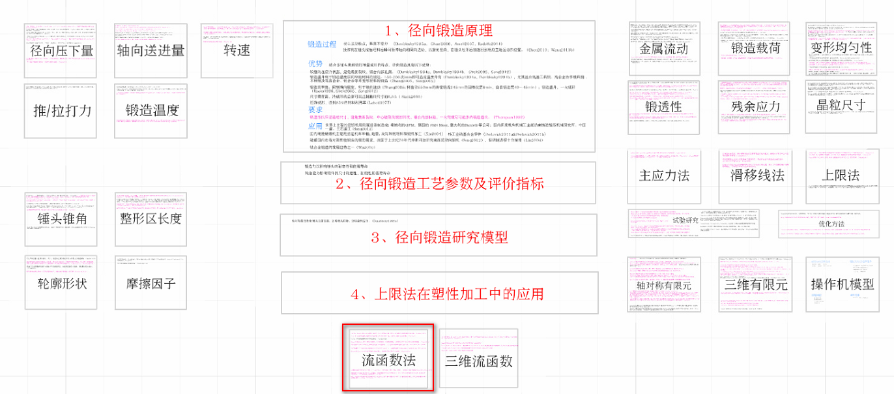
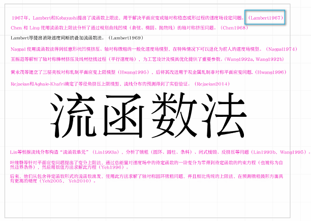
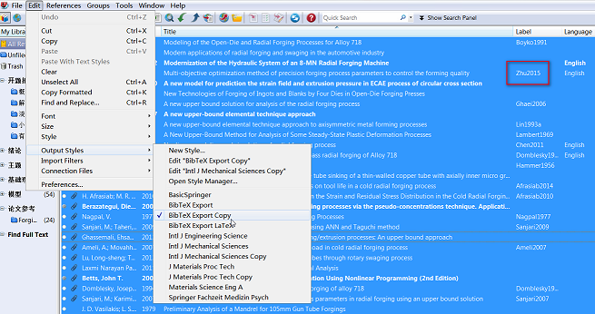

学位论文写作中的软件组合¶
发布于：2017-01-07 | 分类：process automation
前后历经一年的时间，学位论文终于完稿。往简单方面说，这是一个组织和整合已发表小论文内容的过程——撰写内容本身不再是主要问题，取而代之的是内容的连贯和文章的排版。然而，这依旧是一项浩大的工程，本文即记录此过程中使用的工具集合。
文献综述——Endnote+Prezi¶
EndNote是一款大众普及的文献管理工具，其备注、分组、格式化导出等功能已经在平时的文献阅读、期刊论文写作方面，为我们带来了极大的便利。不过，当我们处理学位论文综述部分上百篇文献及其相互关联时，Endnote中一条条文献记录的线性排列方式难以方便地给予我们一个从全局到细节的完全掌控。
这时候，希望将EndNote中依次排列的分组/文献平摊到一张无限大的白纸上，宏观上可以把握各个分类；当需要关注某一主题时，细节上又可以一览无余。这一切，可以借助Prezi实现！当然，同类型的软件还有iPresst和Focusky。
Prezi是一种主要通过缩放动作和快捷动作使想法更加生动有趣的演示文稿软件，它打破了传统Powerpoint的单线条时序，采用系统性与结构性一体化的方式来进行演示。
它的 缩放 功能正是我所需要的，宏观上便于把握各个主题，放大后即可关注具体内容，也就是拓展了我们的视野。以下两幅图片为宏观和细节的两个状态，此过程可以通过鼠标的滚轮连续地、平滑地过渡。


在这个组合中，Prezi类似于一个大屏幕，其数据源为EndNote，这就方便了对数量较大的文献的综合观察和分析。注意，图2右上角蓝色方框中作者+年份的label用于建立EndNote与Prezi中文献的对应关系，并且下一节将介绍这个label。
Prezi并不是文献管理工具，然而一旦结合Endnote使用，则是如虎添翼。
正文写作——LaTeX+Adobe illustrator¶
\LaTeX在长文档排版及数学公式的展现上具有无比的优势，并且各大高校一般都有\LaTeX格式学位论文的模板。这就使我们能够专心于码字，基本省去了后期手工排版的忧虑；尤其是论文定稿后由于不可抗拒因素突如其来的修改，一字之多便可致之前排版天下大乱。以下是托管在Github上的上海交通大学学位论文模板主页：
这样，正文的写作无非是文字、公式、图片及参考文献，文字一个个码，公式有\LaTeX的语法参考，以下分别说一下图片和参考文献：
-
考虑图片的美观性，一般推荐
eps格式的矢量图；并且，便于后期对图片中内容的修改。Adobe illustrator（以下简称为AI）、CorelDraw等都是优秀的矢量图编辑工具。 -
SJTUThesis中采用bibtex编译参考文献，这就需要从EndNote中导出BibTeX格式的参考文献条目。-
在
EndNote中设置需要引用的文献的Label属性，例如下图中的Bai2015（这就是上一节提及的Label），并且注意：对于中文文献，需要设置Language属性为chinese。 -
选择文献的导出格式为
BibTeX：Edit->Output Styles
-
选择需要导出的记录：
File->Export...
-
演示文稿制作——Prezi+AI+MathType+PhantomPDF¶
微软的PPT是文稿演示软件的翘楚，不过鉴于Prezi非线性的、二维的内容组织方式，有利于更好地呈现出内容间的逻辑关系，所以选择了Prezi作为答辩内容的演示软件。
这一阶段只需按需截取\LaTeX生成的PDF格式的学位论文即可，如果你对直接截图的数学公式的清晰度不满意，可以参考如下的转换步骤：
-
复制源文件中\LaTeX语法格式的公式到
MathType软件中，此时生成了渲染后的公式（如果略有错误，手动修正即可）。 -
复制渲染后的公式到
AI，此时为矢量化的可编辑图形；设置需要的分辨率，输出透明背景的PNG图片即可。
另外，如果需要展示表格，而你既不想重新输一遍表格数据又对截图PDF的效果不满意，那么可以借助PhantomPDF和AI实现：
-
使用
PhantomPDF打开论文，在左侧缩略图区域找到包含所需表格的页面，右键菜单选择Extract Pages...，保存为一个单页文件。 -
使用
AI打开上述文件，得到了矢量化的内容，删除表格之外的其他元素，按照需要的分辨率存储表格为PNG图片即可。